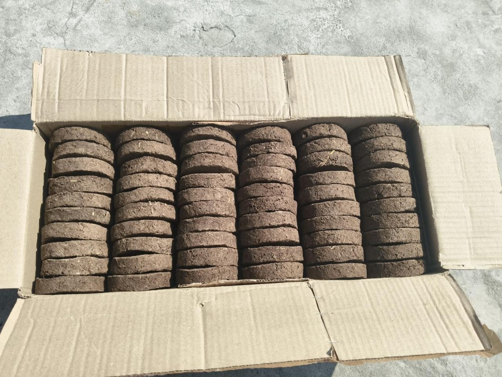

100% Organic • Chemical-Free • Export Ready
Our Differentiator
Purity, Consistency & Global Customer Satisfaction
Cow dung used to be treated as farm waste. Today it is a traded commodity. Growers around the world want to rebuild tired soil and cut back on synthetic chemicals, and demand for dried and composted cow dung keeps rising. India, with one of the largest cattle populations in the world, is well placed to supply it.
At Anupama Flooring, we export 100% natural cow dung fertilizer sourced from rural farms across India. This article explains why the product is in demand, how we make it, and what buyers should know about importing it.